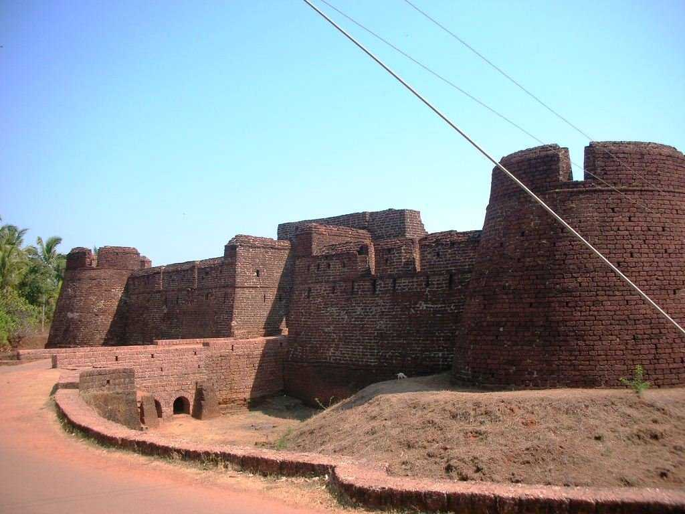
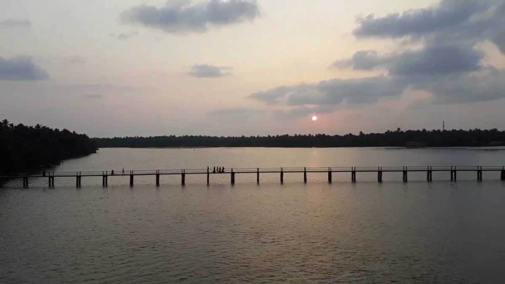
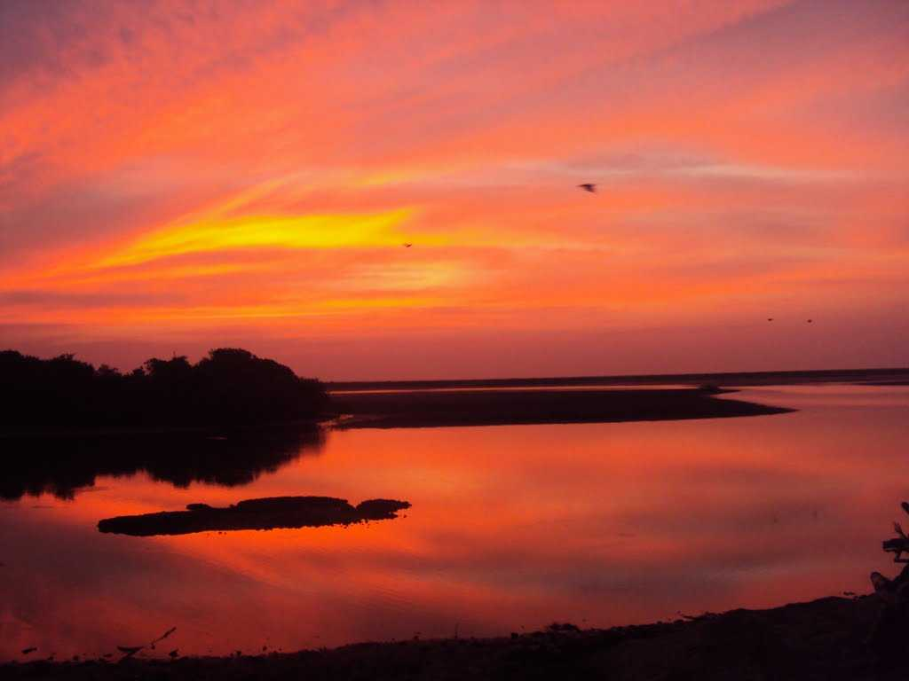

Ranipuram Hills
The gentle hills of Ranipuram in Kerala are famous for its trekking trail.Situated at the height of about 750 meters above sea level,this destination has thick forest vegetation and lush green grasslands.The whole place is proposed inside the Ranipuram Wildlife Sanctuary which merges with Talakaveri Wildlife Sanctuary of Karnataka.

Bekal
Located on the west of the Malabar coastline,It is famous for its beaches, backwaters, forts and some tourists spots.Bekal is home to the largest fortress in Kerala. Shaped like a giant keyhole, the Bekal fort is bordered by the Arabian on three sides. A set of 45 caves called the Nityanandashram caves, Kappil Beach and Chandragiri fort are few of the other major attractions.Bekal was also selected as one among the top ten travel destinations by Lonely Planet.
Nileshwar
Nileshwaram, also known by the name of Nileshwar, is a major town that is located in the Kasaragod District of Kerala in southern India.Nileshwaram is one of the three municipalities that can be found in the district, the others being Kasaragod and Kanhangad.Nileshwaram is also referred to as the cultural capital of the Kasargod District and lies nestled between two rivers, the Nileshwaram Puzha and Thejaswini Puzha. With the Arabian Sea to its west, the town is breathtakingly beautiful and a spectacular site to be at.
Kumbala
The ancient town of Kumbala situated about 13 km from Kasargod has once served as the seat of power for Raja of Kumbala.Today, this place offers a famous temple of Lord Gopalkrishna which is quite popular among the devotees.
